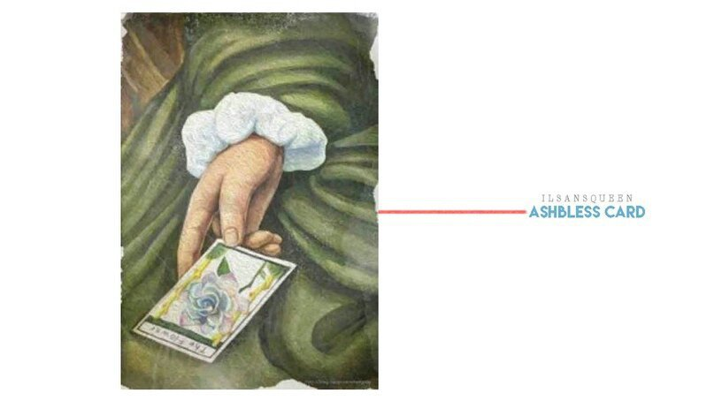

В прошлом посте я рассказал вам историю смеральдо. Вы всё ещё помните место, где я познакомился с этим цветком, об Академии Игральных Карт? Вас интересует связь между смеральдо и игральными картами? Сегодня я буду рассказывать о фигуре, тесно связанной с картами, — об Уильяме Эшблессе.
Об Эшблессе известно очень мало, помимо того, что он был итальянским дворянином и поэтом. А также хорошо разбирался в картах, которые начали набирать популярность в Европе 16-го века. Он сделал игральные карты для дворца и дворянских салонов, но говорили, что Эшблесс заболел, сильно погрузившись в свою работу. Это произошло, когда он посетил деревню, чтобы развеяться. В поисках горячих источников и свежего воздуха, чтобы восстановить здоровье, Эшблесс наткнулся на смеральдо.
На краю деревни, где остались только руины замка, расцветал неземной красоты цветок. Никто из местных не знал его названия, а позже он услышал о любовной истории от старухи из деревни. Как Вы понимаете, будучи поглощенным игральными картами, Эшблесс был романтичной натурой. История уродливого мужчины и бедной женщины стала вдохновением для него. Эшблесс дал название цветку и дал своё значение на языке цветов. Цветок был назван «смеральдо», беря окончание названия деревни — ‘La Città di smeraldo’, а на языке цветов имел значение ‘non potevo dire la verità’ (правда, которая не может быть сказана). Вернувшись домой, он нарисовал карту с этим цветком и назвал её «Цветочная карта», а также включил её в набор «Карты Эшблесса».
Его прямое значение — «наслаждение», «цветение», а перевёрнутое — «падение», «конец» и «новый старт». Говорили, что «Карты Эшблесса» стали сенсацией в Европе. Но немногие помнят об этом сейчас. Всё дело в том, что во время междворянской борьбы семья Эшблесса потеряла свой статус и не оставила следа в истории. Вместе с ними «Карты Эшблесса» и история цветка Смеральдо были забыты. Но, как бывает с любой красивой легендой, есть вещи, которые не дают забыть о ней. Любовная история и история Эшблесса вернутся. Об этом я расскажу в следующем посте. 